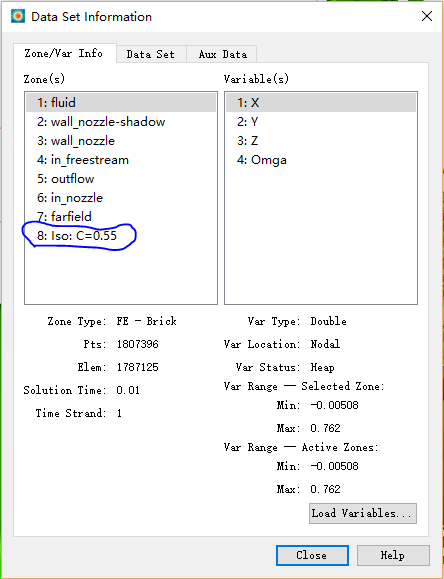

Tecplot
2020-09-14
1 Macro
1.1 Variable
1.1.1 Using format in variable
$!VarSet |p_no| = 1
$!VarSet |case_name| = "G|grid_no%d|R|run_no%d|P|p_no%d|"2 Tips
2.1 Annotation
2.1.1 Showing time while creating animation
Create a text box on your plot and include the text “&(SOLUTIONTIME.2f)” (the quotes are not necessary, but the ampersand and the parentheses are necessary) which will be replaced by the current solution time in each of the images that make up the AVI file.
2.1.2 Add Greek symbols
- Bold:
<b>...</b> - Italic:
<i>...</i> - Subscript:
<sub>...</sub> - Superscript:
<sup>...</sup> - Greek:
<greek>...</greek> - Math:
<math>...</math> - Special:
<userdef>...</userdef>
2.2 Special operations
2.2.1 Data cut-away in 3D
Tecplot uses Value Blanking to do this. Note, Value Blanking applies only on a specific zone. It seems like it has no effects on derived objects, for example, ISO-surface.
2.2.1.1 Export zone
Import data files and open Iso-Surfaces with value 0.55,

Remove the outermost iso-surfaces by Data –> Extract –> Iso-Surfaces,

A new zone will be created,

Filter the zones you want to show,
2.2.1.2 Do Blank
Plot –> Blanking –> Value Blanking,

Apply multiple criterion,

where X>0.2 is not shown.
2.2.1.3 A complex region to show
If you want to do \(y^2+z^2<0.05^2\), accomplish that by Data –> Alter –> Specify Equations:
{Blank}=IF({Y}**2+{Z}**2<0.05**2, 1, 0)